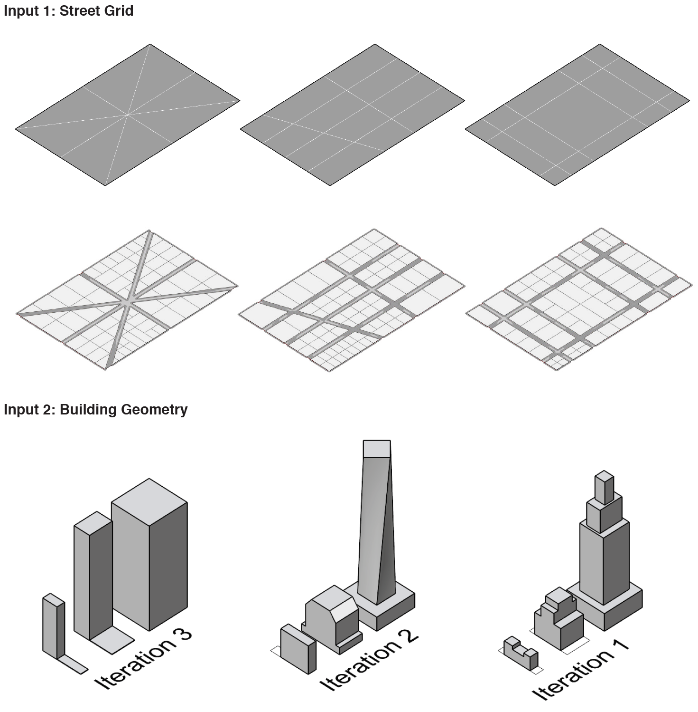
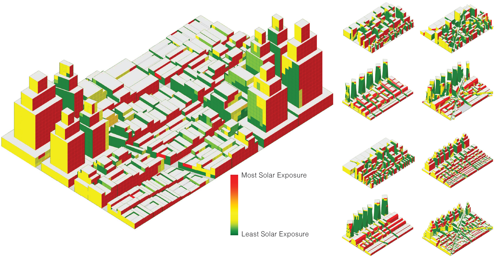
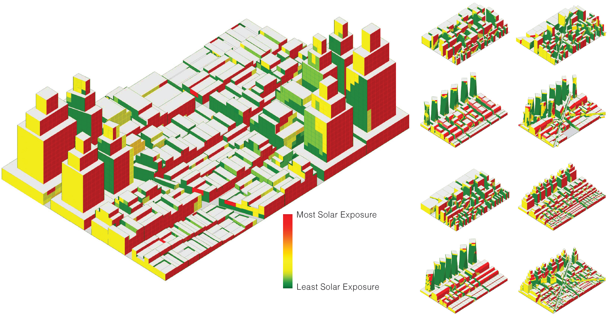
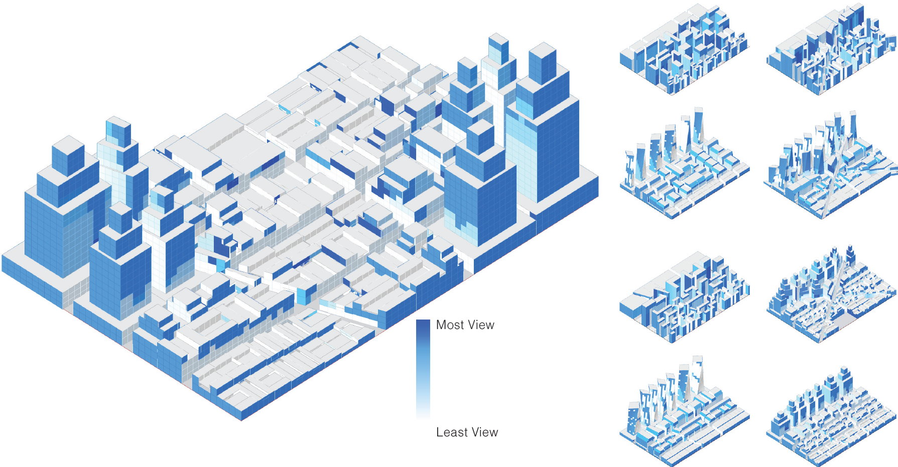

Using Rhino3D and parametric plugins, a procedural city model was
developed based on three primary inputs: street network, building
geometry, and density allocation. The street network defines block
boundaries and overall urban structure, while buildings are generated
parametrically to fit within each block. Density is controlled through
attraction points that distribute program intensity across the site, allowing
building height, footprint, and massing to adapt according to location.

Parametric City Generation & Analysis
Summer 2025
Generative Design
Parametric Modeling
Solar & View Analysis
Tools:
Rhino3D + Grasshopper
Plugin:
- Ladybug
- DeCodingSpace
With input 1 and 2, the building geometries are allocated to fit
the street grid shape with different density allocation points. The
density allocation points determines which area is downtown
and which is suburb, providing a more contextual elements to
the cities generated. With 3 iterations of each input, 3 x 3 x 3
creates a total 27 numbers of cities generated.
Grasshopper Script for City Generation:
Grasshopper Script for City Generation:
 

The solar analysis shows clear pattern where south facing
facade receives the most light, while there are some surfaces
with high obstruction receiving less solar radiation. This shows
that for building's solar exposure, usually orientation is more
important than surrounding.

In case of view analysis, the general pattern is that higher
floor is always better. Compared to solar analysis, the view
depends much more on the surrounding, where the existence of
higher buildings affects view much more than the height or the
orientation of the building.